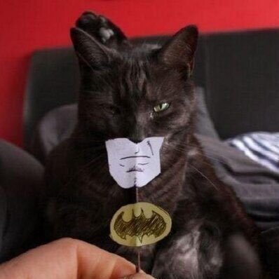
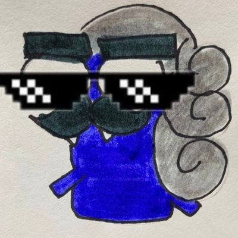
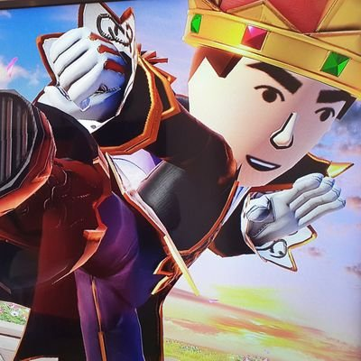
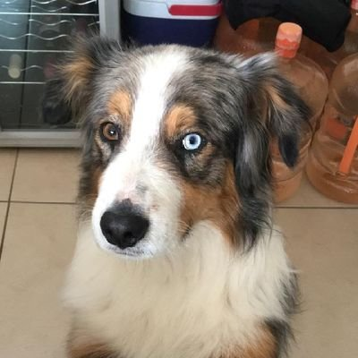
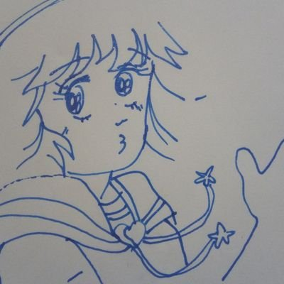

Quiénes somos?
El Monachinista
La voz que susurra en tus DM's
- El mejor crítico de cualquier cosa que se te ocurra
- Mala fama como pisoteador profesional
- Si pudiera convertir a todos en monas chinas lo haría

El Todasmías
La mano invisible que te roba los tuits
- No se cansa después de correr 15 km
- Nadie sabe realmente su sexo
- Posiblemente producto de la imaginación de un monje Tibetano

El Trapo
La esencia presente en todas las cuentas alternas
- Pianista master race
- Vive en los datos
- No dejes que te venda bitcoins

El Christian
Manteniendo los pies en la tierra, y los tuits fijados
- No es economista pero da mejores consejos que uno
- Ya terminó su maestría
- Posiblemente lo tengas bloqueado(Tampoco dejes que te venda bitcoins)

El Panelito
No hay obstáculos imposibles cuando la meta es un tuit
- Mejor que Dr. House
- Tapatio de corazon
- No está hecho de panela

El Troll
La distancia adecuada es tratar de no evitar las peleas en los replys
- IQ 300+ en Bebidas Alcohólicas
- Arquitecto de Tuits
- Nunca le mojes el zapato con fluidos corporales el zapato

La Nube
El caos reptante que se acerca timidamente hacia tu TL
- Surfea el Caos
- Copia de todos los tuiteros anteriores
- Perdió todo en apuestas y nunca ha acabado una carrera